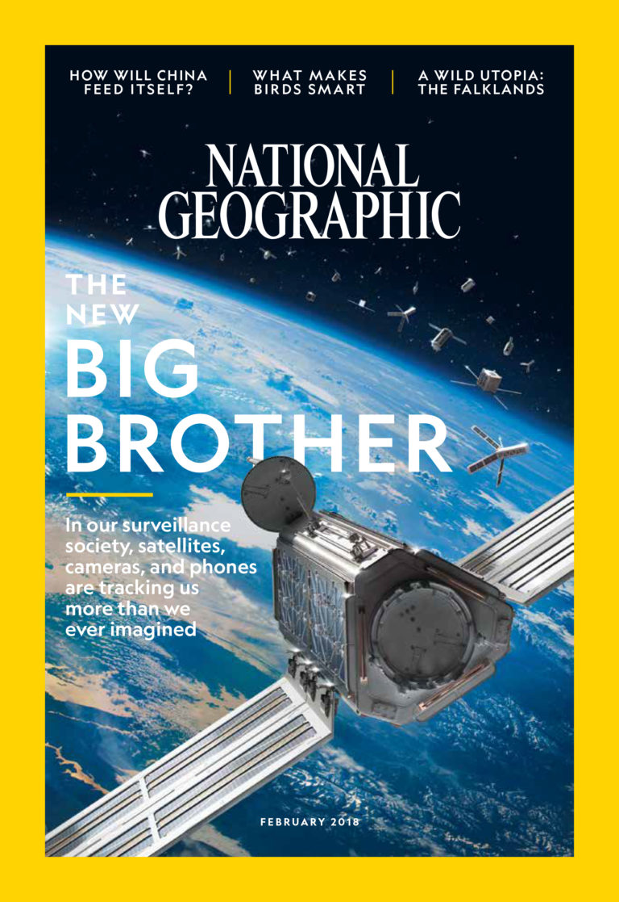

Masking to be our friend
Despite its actions to be the enemy
Leading people to their end
And addictive as ecstasy
Used as a way to spy
Used as a distraction
Its deceiving to the eye
As the easiest way of interaction
Yes it has its pros
It helps us everyday
And keeps things from moving slow
But it destroys in a way
Open up. Stop being blind
In your hand isn't perfection
C'mon lets take back mankind
Realize technology is an infection
